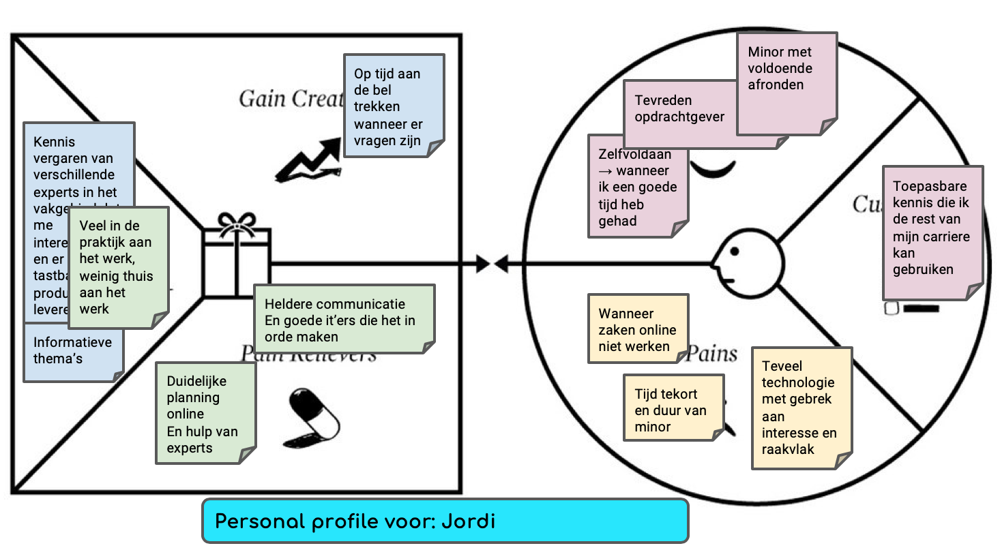

Week 1: Kruispunten
Introductie
Tijdens de Eerste week van de Minor gingen we gelijk van start. Er werd aan ons gevraagd om met een creatief idee te komen voor je portfolio. Dit mochten we in elkaar knutselen met papier en stickers. Door dit te doen werd er direct een duidelijk beeld geschetst over het uiteindelijke product wat afgeleverd moet worden. Verder werd het model Value Proposition Design aan ons voorgelegd. In dit model kan een bedrijf via een Value Map duidelijk maken wat het bedrijf moet doen om aan de klantwensen te voldoen. Deze klantwensen de ‘customer profile’ is wat de klant verwacht te krijgen van een bedrijf. We hebben tijdens de les van Smart Business een Value Proposition Design van de opleiding gemaakt, deze is hieronder te zien.
Filmpje
Met dit model was het de bedoeling dat je een introductiefilmpje ging maken, hierin stonden de volgende vragen centraal:
- Waarom vind je het onderwerp Smart Industry boeiend?
- Wat wil je met het onderwerp gaan doen?
- Over welke relevante kennis en vaardigheden beschik je al en op welke vlakken ga je jezelf ontwikkelen?
- Welke partners en faciliteiten heb je nodig en hoe vind je die?
Kruispunten
Verder werd bij Smart Start gevraagd of we de kruispunten tussen je studie en de minor konden formuleren. Hierdoor werd er door iedereen een duidelijk beeld geschetst wat je kon verwachten van de minor. De opdracht die je moet uitvoeren is hieronder te zien, het antwoord hierop daaronder.
Tijdens de workshop heb je een aantal kruispunten tussen je studie en Smart Industry verkend.
Allereerst zal ik mezelf voorstellen. Ik ben Jordi Bens, 20 jaar oud en studeer aan de Avans Hogeschool 's-Hertogenbosch Technische Bedrijfskunde. Technische Bedrijfskunde wordt over het algemeen gezien als een brede studie en ik sluit me hierbij aan. Veel onderwerpen die naar voren zijn gekomen aan het begin van deze Minor zijn al kort naar voren gekomen tijdens de afgelopen 3 jaar op Avans. IoT is een vaak terugkomend onderwerp maar ook actuele onderwerpen als 3D-printen kwamen wekelijks aan bod. Hieronder zal ik een interessant thema benoemen wat ik een mooi kruispunt vind met de studie TBK.3D-printen is een veel voorkomend onderwerp als het gaat over Smart Industry of Industry 4.0. Dit is vooral een terugkomend onderwerp in de medische Industry. Door middel van Bio Inks kunnen innoverende bedrijven cellen namaken en zo organen creëren. Op dit moment zijn deze ontwikkelingen nog in de kinderfase, maar er is heel veel potentie in deze markt. Er wordt van een orgaan een 'computer-aided design' (CAD) gemaakt en deze wordt daarna met biomateriaal uitgeprint. Op dit moment is het van essentieel belang dat verschillende bio-Ink materialen worden uitgevonden en uitgetest. De cellen in het menselijk lichaam bestaan namelijk niet allemaal uit dezelfde stoffen, het is dus van belang om de juiste cel inhoud te combineren met de cel inhoud van het lichaam om vergifting te voorkomen. Hierbij is bio compatibiliteit, printbaarheid en de mechanische eigenschappen key factors. Ik heb tijdens mijn studie nader onderzoek gedaan naar 3D-printen in de voedselindustrie en vond dit een interessant onderwerp. Nu ben ik na research achter dit thema gekomen en wil hier graag meer over weten. Er zit veel potentie in deze ontwikkeling en het is mooi dat technologie, smart industry en gezondheid zo met elkaar verbonden worden. Het zou weergaloos zijn als er in de toekomst een kopie kan worden geprint van een orgaan om zo de kwaal in je lichaam te verhelpen. Dit is toch wat de klant wil, omdat orgaandonatie een moeilijk onderwerp blijft.
Klik hier voor de bron!
Connection en Technology
Tijdens de lessen van Smart Technology moesten we voor het eerst een pcb-schakelaar programmeren. Dit werd gedaan d.m.v. een onlinecursus en een aanwezige expert. De resultaten van de eerste week zijn hieronder te zien in het filmpje. Voor Smart Connection hebben we de basis van HTML en CSS geleerd. Deze methodiek zal ik gebruiken tijdens het maken van dit portfolio. Tijdens de eerste workshop hebben we een voorbeeld pagina gemaakt in HTML met een foto van jezelf.